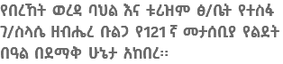
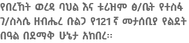

በዓሉን ምክንያት በማድረግ ተጋባዥ እንግዶችን በጉብኝት ፣ በስዕል ኤግዚቢሽን፣ በስነፅሁፍ እና በሙዚቃ ያከበረው የበ/ባ/ቱ ፅ/ቤት የወረዳዋን ዋና ምልክት የሆነውን ተስፋ ገ/ስላሴ የትውልድ ቦታነ በማስጎብኘት በዓሉን በድምቀት አክብሯል፡፡ ተሳታፊዎች እንደተናገሩት ከሆነ ጉብኝቱ በተወሰኑ ግለስቦች ብቻ ሳይሆን ሁሉም ኢትዮጵያዊ ሊያየው እና ታሪካችውን በጉልህ ሰፍሮ ትውልድ እንዲማር ይረዳል ሲሉ ተናግረዋል

ገበያ መዋያ (ሰዎች ያለቁበት) በአብክመ የሰሜን ሸዋ ዞን በበረኸት ወረዳ 09 ቀበሌ ልዩ ስሙ መጥተህ ብላ ዙሪያ በሚባል ስፍራ ይገኛል፡፡ታሪኩ (ድርጊቱ) የተፈፀመው ግንቦት 28/1928 ዓ.ም ጨካኙ የኢጣሊያ ጦር አገሪቱን ለመግዛት ወደ አገራችን በመጣበት ወቅት ነው፡፡ ጨካኙ የኢጣሊያ ጦር ወረዳችንን በመግዛት ወረዳችን ላይ ሲደርስ ህዝቡን እንዲገዛለት የተለያዩ መንገዶች ይጠቀም ነበር፡፡ ምክንያቱም ህዝቡ አንገዛም በማለት ከተለያዩ አቅጣጫ ጦርነት ገጠሞ ስለነበር ነው፡፡ ህዝቡንም ማወያየትም ባለመቻሉ እና ከሁሉም አቅጣጫ የገጠመው ጦርነት ግራ ያጋባው ጨካኙ የኢጣሊያን ጦር በሆዱ ቂም ደብቆ እንደመፍትሄ የወሰደው በወረዳዎች ላይ ያሉት ታዋቂ የሀገር ሽማግሌዎች ምህረት እናውርድ እንስማማ በማለት ለውይይት ግንቦት 26/1928 በስድስቶ በጊዜው የወረዳው ወይም የአውራጃው ዋና ከተማ ላይ ቀጠሮ ያዘ፡፡ በእለቱም ክፉ ይመጣብናል፡፡ ብለው ያልጠረጠሩት የወረዳዋ የሀገር ሽማግሌዎች ከ05፣04፣03፣02፣01፣010 ቀበሌ በስድስቶ ሊስማሙና ምህረት ሊያወርዱና ተሰበስበው በዚህን ጊዜ ብዛታቸው ከ380 በላይ አባቶች ፣የሀገር ሽማግሌዎች መሰብሰባቸውን የተረዳው ጨካኙ ኢጣሊያ የጦር መሪ (አዛዥ) ዙሪያውን መትረየስና ሌሎች ፈንጅ የጦር መሳሪያዎችን በታጠቀው የጦር ሰራዊቱ በማስከበብ ለኢጣሊያ ህዝቡ እንዲገዛ አሳምኑ ህዝበ ለእኛ መግዛት አለበት በማለት አስገዳጅ ቃላትን መናገር ጀመረ ፡፡ጀግኖች የወረዳችን ሽማግሌዎች ወረዳችን በነጭ አትገዛም ህዝባችን ለነጭ እንዲገዛ አናሳምንም በማለት ለ3 ተከታታይ ቀናት በዚያው በስድስቶ ቀበሌ ሲደራደሩ ሰነበቱ የሀገር ሽማግሌዎች ግን ዙሪያውን በጦር መሳሪያ ስለተከበቡ ወዴትም መንቀሳቀስ አይችሉም የሚበላም የሚጠጣም እህል ውሃ የሚባል ነገር ሊያገኙና ሊመገቡ ሰቀርቶ በአይናቸውም እያዩም ነበር፡፡3 ቀን ሙሉ አቋማቸውም በርሃብና በጥማት አልተናወጠም፡፡
ለነጭ አንገዛም ወረዳችን በነጭ አትገዛም ብቻ!! አቋማቸውን ባለመለወጣቸው የተበሳጨው የኢጣሊያን የጦር አዛዥ በ3ኛው ቀን ግንቦት 28 ቀን 1928 ዓ.ም
ሁሉንም አባቶች በመቀነትና በገመድ እጃቸው በማሰርና በማስተሳሰር እያንገላታ በመሳሪያው ሰደፍ እየደበደበ ከስድስቶ ቀበሌ ድርጊቱ ወደ ተፈፀመበት መጥተህ ብላ ዙሪያ
ገበያ መዋያ ሁሉንም እጃቸውን ወደ ኋላ እንዳስተሳሰረ አመጣቸው፡፡
ገበያ መዋያም ላይ ቢሆን የኢጣሊያን ጦር አዛዥ ጥያቄ ያው ህዝቡ በእኛ እንዲገዛ ታሳምናላችሁ አታሳምኑም የሚለ ነበር፡፡
![አብሽ ውሃ
አብሽ ውሃ የአርጎባው ብሔር ለሰርግ፣ ለአረፋ ፣ለኢድ እንዲሁም ለመውሊድ ለመጠጥነት የሚጠቀሙበት ተወዳጅና ጣፋጭ ባህላዊ መጠጥ ነው፡፡ ይኸንን ተወዳጅ መጠጥ ለማዘጋጀት የሚያስፈልጉ ነገሮችን ስናይ ፡- በመጀመሪያ አብሽና ማሽላ በዋናነት ያስፈልጋል፡፡ ይኸም አብሽ ተንገርግቦና ተቆልቶ ማሽላው ደግሞ ታምሶ ሁለቱም ተደባልቆ ይፈጫል፡፡ አብሽ ውሃውን ለማዘጋጀት የሚያስፈልጉ ቅመማ ቅመሞች፡ ጥቁር አዝሙድ ኮራሪማ፣ ቁንዶ በርበሬ፣ ቅርፉድ ቀረፋ ያስፈልጋል፡፡ ማሽላውና አብሹ እጁ ሳይነካው በፈላ ውሃ ይላጋል፡፡ ጠዋት ተልጎ ማታ ይቀጣናል፡፡ መጠኑንም ሰናይ 1 ጣሳ አብሽ ውስጥ 6 ጣሳ ማሽላ ይገባል፡፡ ቅመሙ ተዘጋጅቶ በርዶ ሲጎበጎብ ይጨምራል፡፡ ይኽ በተሞላ በ9ነኛው ቀን ጀምሮ ስኳር ተጨምሮ ለመጠጥነት ይውላል፡፡ የተሞላውን ተቀድቶ ሲያልቅ ውሃ እየጨመረ ስኳር እየተበረዘ ለብዙ ጊዜ አገልግሎት ይሰጣል፡](images/u766-10.png)
1
2
3
4
የዲያር ዋሻ
የበረኸት ወረዳ ዋና ከተማ ከሆነችው መጥተህ ብላ በደቡብ ምዕራብ አቅጣጫ 37 ኪ.ሜ ላይ የሚገኝ ሲሆን የቆላ የአየር ንብረት ባለው ተራራ ስር የተሰራ ነው፡፡
ትልቁ ቁም ድንጋይ
የሚገኘው በሸጋ ቀበሌ ድንጋይ ጥራ ት/ቤት አካባቢ የሚገኝ ሲሆን ከፍታውም ከ10-12 ሜትር የሚረዝም ሲሆን የጎኑ ስፋት ደግሞ 15 ሜትር ይደርሳል ፡፡
ትንሹ ቁም ድንጋይ
የሚገኘው በሸጋ ቀበሌ ሲሆን ከፍታው ከ3 ሜትር በላይ ርዝመት አለው፡፡ የጎን ስፋት ከ9-10 ሜትር ይደርሳል፡፡ ይህ ቁም ድንጋይ የተፈጥሮ ማራኪነቱ እንደተጠበቀ እንዳይቀጥል ሰው ሰራሽና የተፈጥሮ አደጋ /ጉዳት/ አጋጥሞታል፡፡
የወረዳችን የታሪክ አባቶም መልሳቸው ያው፡- ለነጭ አንገዛም ህዝባችን ለነጭ እንዲገዛ አናሳምንም የሚል ነበር ህዝባችንም አይገዛም ነው ያሉት፡፡ የሀገር ሽማግሌዎቹም ለአምላካቸው ፊታቸው ወደ ምስራቅ አድርገው እየነገሩ ባሉበት ሰዓት የኢጣሊያ የጦር አዛዥ ሁሉም በተጠመደው መትረጊስ እንዲጨፈጭፉ ትዕዛዝ አስተላለፈ እሳት ዘነበባቸው፡፡ ቦታ /የገበያ መዋያ/ አባቶች እንደሚሉት ታሪካዊ ድርጊቱ ከተፈፅመ ጊዜ ጀምሮ እስከ 1980 ዎቹ መግቢያ ድረስ ሳይታረስ ተከብሮ ይኖር እንደነበረና ከ1980ዎቹ መግቢያ ጀምሮ በግለሰቦች ሲታረስ የቆየ መሆኑን ያስረዳል፡፡ የበረኸት ወረዳ ባህልና ቱሪዝም ጽ/ቤትም ቦታው ታሪካዊ ቅርስ ሆኖ ስለተመዘገበ ቦታውን ለግለሰቦቹ (በይዞታነት ያርሱት ስለነበሩ ግለሰብ ) ካሳ በመስጠት ቦታውን በማሳጠር መታሰቢያ ሀውልት በማሰራት ስራውን 100% በማጠናቀቅ በቱሪስቶች እንዲጎበኙ ለማመቻቸት እንቅስቃሴ እያደረገ ነው፡፡ እንቅስቃሴውም ህዝቡን ከጎን በማድረግ ስለሆነ የወረዳው ህዝብ ለወረዳው ታሪካዊ ቅርስ የበኩሉን ድርሻ እንደሚወጣ በመተማመን ነው፡፡
![የስነ-ቃል ምንነት
የስነ-ቃል አበይት ባህሪያት ስነ-ቃል የህ/ሰቡ ቁሳዊና ባህል መገለጫና ከትውልድ ትውልድ ማቆያ ጥበብ ነው፡፡የቋንቋው ተናጋሪ ህዝብ የስራ፣የአምልኮ፣የሠርግ፣የሀዘን፣የደስታ ባህሉንና ስርዓቱን ይገልፁበታል፡፡
በመነገር፣በመተረት ወይም በመዜም በተወሰኑ ማህበራዊ አጋጣሚዎች ላይ የሚከወን ቃላዊ ፈጠራ ሲሆን የአንድ ማህበረሰብ ባህል ወግና ልምድ እንዲሁም ታሪክ ማስተላለፊያና ልዩ ልዩ ክስተቶችንና የህይወት መልኮችን መግለጫ ኪነ-ጥበብ ነው፡ ከዚህ በመነሳት አንዱ የስነ-ቃል ዘርፍ ስለሆነው ምሳሊያዊ አነጋገር ልናመራ ወደድን፣
ምሳሊያዊ አነጋገር ማለት፡-የሰው ልጅ መግለፅ የሚፈልገውን ነገር ለአእምሮ በሚቀልና በሚገባ ሁኔታ የሚሞከርበት የሀሳብ ማንሸራሸሪያ ዘዴ ነው፡፡ በመሆኑም በወረዳው ማህበረሰብ ውስጥ ብዙ አይነት ምሳሊያዊ አነጋገሮች ይነገራሉ፡፡ከነዚህም መካከል በሴት፣በልጅ፣በእንሰሳት፣በዉቂያ፣በአጨዳ፣በአረም፣በጉልጎላ፣በወፍ ጥበቃ፣በጥጥ ስራ ወ.ዘ.ተ የሚነገሩ ስነ-ቃሎች ትቂቶቹ ሲሆኑ በዚህ ፁሁፍ የተካተተው በልጅ የሚነገሩ ምሳሊያዊ አነጋገሮችን ነው፡፡ ስነ-ቃል በርካታ ባህሪያት አሉት ከነዚህም መካከል፡- ህዝባዊነት አክሽንነት
ልውጤነት
ሁለንተናዊነትክንዋኔ
ጥንታዊነትና ወቅታዊነት](images/u847-41.png)
ልጅን የሚያንኳስሱ ምሳሊያዊ አነጋገሮች፣
o ውሻ ለጮኸለት ልጅ ለሳቀለት
o ልጅ ለእናቷ ምጥ አስተማረች
o ልጅ ለወለደው ሙቅ ላሞቀው
o ልጅ ቢያስብ ምሳውን አዝማሪ ቢያስብ ጠላውን
o ልጅ ከስንጉርጉር እህል ከጉር
o ልጅ ከጦረው ጥርስ የጦረው
o ልጅ ከወረሰ ነገር ፈረሰ
o ልጅ ካበጀው አባት ያበላሸው
o ልጅ ያለ ልጅ አከለ
o ልጅ ያቦካው ለራት አይበቃም
o ልጅ ይሮጣል እንጅ አባቱን አይቀድምም
o ልጅ ደረሰ ቤት ፈረሰ
o ልጅን በጡት እህልን በጥቅምት
o ለልጅ ጥሬ ለአዋቂ ወሬ
o ልጅና ጦጣ ውሀ ይጠጣ
o ልጅና ወረቀት የያዘውን አይለቅ
o ልጅን ፊት አይበርደውም
o ልጅና ጉንዳን ሁል ጊዜ እንደተጠቃ ነው
o ልጅን መርገምና ራስጌ መሽናት ተመልሶ ጉዳት
![የተሰፋ ውልደት እና እድገት
ታህሳስ 24 ቀን 1895 ዕለተ ርብ ቡልጋ ክትብ ወይራ ቀበሌ ክርሚት ሚካኤል ከግርጌው ረጅም ዘመናት (ከ200 ዓመት በላይ )ይገመታል ካስቆጠረው የቁርቁራ ዛፍ አጠገብ “ቁርቁራ” ተብሎ በሚጠራው መንደር በእነ መምህር ገ/ስላሴ ቢልልኝ ሰፊ ግቢ ውስጥ የመንደሩ ሴቶች ሰብሰብ ብለው በየዕለቱ ያልተለመደ ሆኖም በየክስተቶቹ የሚደገም ፀሎት ያነባሉ፡፡ “ማርያም ማርያም ማርያም” የሚለው የአክርሚት ቀበሌ የቁርቁራ መንደር ነዋሪዎች የተማፅኖ ፀሎት በየጨዋታቸው መሃ ንፋስ እያመጣው ቢያደነቅረውም በዘመኑ ሃኪሞቹም ነዋሪዎቹ፣ ሃም ቤቱ ለመኖሪያ የተሰራው ጎጆ ቤት ነውና ወደዚህ ልውሰድ ፣ ወደዚህ ሳላይ ብለው አልተጨነቁም መምህር ገ/ስላሴ ቢልልኝ፡፡
ታህሳስ 24 ቀን 1895 በመምህር ገ/ስላሴና በ/ሮ ስዕለ ሚካኤል ቤት የተጠበቀው እንግዳ በአክርሚት ቀበሌ እናቶች የባህላዊ የማዋለድ ጥበብ እና “በማርያም” ስም ልመና 8ኛው የቤተሰቡ አባል በመሆን ይችን ምድር ተቀላቀለ ፡፡ ተስፋ ገ/ስሳሴ ዘብሔረ ቡልጋ፡፡ በአክርሚት ሚካኤል በመምህርነት በግላቸው ደግሞ በግብርናና የተለያየዩ የሃይማኖት መጻህፍትን ቆዳ እያለሰለሱና ቅጠል ስር አዳቅለው፤ ቀለም ፈጥረው ፣ በዶሮ ላባና በመቃ ብዕር እየጻፉ የቤተ-ልርስትያኒያቱን የፀሎትና የትምህርት መፅሃፍትን በማምረት የሚተዳደሩት መምህር ገ/ስላሴ ቢልልኝ ለደርዘን አንድ የቀረው የልጅ ሃብት ቢኖራችም የገበሬው ስራው ብዙ ነውና እንደሌሎቹ ጆቻቸው ተስፋንም የቤተ-ክርስትያን ትምህርት ከማስተማር ይልቅ ከእረኝነቱ (ከከብት ጥበቃ) እንዲርቅባቸው አልወደዱም፡፡ በ 4 ዓመት ከአ4 ወር ከ4 ቀን ራሳቸው ባዘጋጁት የፊደል ገበታ አስተምረውታል፡፡
ትንሹ ተስፋ በእድሜ እየገፋ በአእምሮ እየጎለመሰ ሲመጣ እዚያው ቡልጋ የታጠረውን የትምህርትና የእውቀት አድማሱን ወደሌሎች አካባቢዎች በተለይ ታላቅ ወንድሙ ወደሚኖሩበት ከተማ በማቅናት ለማስፋት ልቡ ማሰብ የጀመረው “ዲያቆን” ተስፋ ገብረሥላሴ ከተባለ በኋላ ነበር፡፡
1900 ዓ.ም ላይ አክርሚት ሚካኤል ግቢ ውስጥ ትንሽ ጎጆ ቀልሰው ጠቀበሌውን ወጣቶች ሰብሰብ ከሚያስተምሩት የአያቱ አለቃ ወልደ አብ ደቀ መዝሚ ከሆኑት ከመምህር ገብረ አብ ወልደ ተክሌ ዘንድ በመሄድ ትምህርት የጀመረው ገና የ 6 ዓመት ጨቅላ ሳለ ነበር፡፡
ያ ዘመን ከቤተክርስትያነቱ ውጪ ኋላ ላይቆይቶ “ አስኳላ” (ትምህርት ቤት) እየተባለ በሚጠራው የዘመናዊ ትምህርት አስተሳሰብ በቡልጋ ምድር ቀርቶ የንጉሰ ነገስቱ መቀመጫ በሆነችው በአዲስ አበባከተማም በወጉ አልተጀመረም ነበር፡፡
ሁሉም ኢትዮጵያዊ “ሀ” ብሎ ትምህርት የሚጀምረው “የኢትዮጵያ ኦርቶዶክስ ተዋህዶ ቤተክርስትያን” በዘረጋችው የትምህርት ገበታ ላይ እንጂ እውቀትን ለማስፋ ጥበብን ለማርባት በዘመኑ የከጀለ ተቋም፣ ግለሰብ ወይም መንግስት አልነበረም፡፡
ጉዞ እውቀትን ፍላጋ የተስፋ እናት ወ/ሮ ስዕለሚካኤል የተስፋ ታላቅ ወንድም አዲስ አበባ ገብቶ የመንግስት ደሞዝተኛ በመሆኑ ተደስተው ሊጠይቁት ሁለት ልጆቻቸውን ብቻ ይዘው ወደ አዲስ አበባ ይሄዳሉ፡፡ አዲስ አበባን በብርቱ ይፈልጋትና ይናፍቃት የነበረው ተስፋ እናቱን ተከትሎ ባለመሄዱ ቅር ቢሰኝም የወንድሙ አዲስ አበባ አራት ኪሎ መግባትና ስራ መያዝ ታላቅ ተስፋ ለሰነቀው ልቡ መልካም አጋጣሚ ሆነለት፡፡
ታላቅ ወንድሙ አቶ ብርሃኔ አዲስ አበባ በተለይም በቤተ-መንግስቱ ዙሪያ አራት ኪሎ አካባቢ በግቢ ሚንስቴር መሥሪያ ቤት ሥራ ይዟል መባሉ ተስፋን ዘወትር የሚቀሰቀስና እንቅልፍ የሚነሳ በሽታ ይሆንበታል፡፡
በዲቁና በሚያገለግልበት የአክርሚት ሚካኤል ቤተክርስትያን እየቀደሰም እያስቀደሰም ሃሳቡ ከአራት ኪሎ ሊርቅ አልቻለም፡›፡ ያቺን ከተማ ከወራት በፊት አይቶ ተመልሷልና እረስቶት እንደመጣ ውድ እቃ ሁሌም በሃሳቡ ማውጣትና ማውረዱን አላቆመም ነበር፡፡
በዘመኑ ነጋዴም ሆነ ገበሬ ለሃገሪቱ አስፈላጊ የሆነውን ግብር የሚገብረው ባለበት ቦታ ቀረጮች መጥተውለት አልያም ወስነውበት ሳይሆን ራሱ ገባሪው ወደ ማዕከላዊው መንግስት ወደ አዲስ አበባ በመሄድ ነበር፡፡
የቡልጋም ገበሬም እንደሌላው ሁሉ ካመረተው ምርት ለመንግስት የሚገባውን ግብር በአህያ ጀርባ ጭኖ ነበር አዲስ አበባ ሄዶ የሚገብረው፡፡
ለሁለተኛ ጊዜ አዲስ አበባ ለመሄድ ጥቂት ስንቁ ቋጥሮ የተነሳው ተስፋ ገ/ስላሴ ለማን ጋር እንደሚመጣ ባያውቅም ግብር የሚከፍሉ የአካካባቢው ገበሬዎች አዲስ አበባ ለመሄድ በዝግጅት ላይ መሆናቸውን በመስማቱ ከቤተሰቡ እየተደበቀ ቅድመ ዝግጅቱን አጠናቋል፡፡
ከቤተሰቡ ተደብቆ ከገገበሬዎቹና ከነጋዴዎቹ ጋር ክብዙ ውጣውረድ በኋላ ከሁለት ቀናት ጉዞ በኋላ ከታላቅ ወንዱም አቶ ብርሃኔ ቤት አደረሱት፡፡ አቶ ብርሃኔም የሰባተኛ ታናሻቸውን ተስፋን በማግኘታቸው ከልብ ተደስተው አብረው መኖር ጀመሩ ጊዜውም 1909 ዓ.ም ሚያዚያ ወር ነበር፡፡ እድሜው ደግሞ 15 ዓመት፡፡ በዲቁና በሚያገለግልበት የአክርሚት ሚካኤል ቤተክርስትያን እየቀደሰም እያስቀደሰም ሃሳቡ ከአራት ኪሎ ሊርቅ አልቻለም፡›፡ ያቺን ከተማ ከወራት በፊት አይቶ ተመልሷልና እረስቶት እንደመጣ ውድ እቃ ሁሌም በሃሳቡ ማውጣትና ማውረዱን አላቆመም ነበር፡፡
በዘመኑ ነጋዴም ሆነ ገበሬ ለሃገሪቱ አስፈላጊ የሆነውን ግብር የሚገብረው ባለበት ቦታ ቀረጮች መጥተውለት አልያም ወስነውበት ሳይሆን ራሱ ገባሪው ወደ ማዕከላዊው መንግስት ወደ አዲስ አበባ በመሄድ ነበር፡፡
የቡልጋም ገበሬም እንደሌላው ሁሉ ካመረተው ምርት ለመንግስት የሚገባውን ግብር በአህያ ጀርባ ጭኖ ነበር አዲስ አበባ ሄዶ የሚገብረው፡፡
ለሁለተኛ ጊዜ አዲስ አበባ ለመሄድ ጥቂት ስንቁ ቋጥሮ የተነሳው ተስፋ ገ/ስላሴ ለማን ጋር እንደሚመጣ ባያውቅም ግብር የሚከፍሉ የአካካባቢው ገበሬዎች አዲስ አበባ ለመሄድ በዝግጅት ላይ መሆናቸውን በመስማቱ ከቤተሰቡ እየተደበቀ ቅድመ ዝግጅቱን አጠናቋል፡፡
ከቤተሰቡ ተደብቆ ከገገበሬዎቹና ከነጋዴዎቹ ጋር ክብዙ ውጣውረድ በኋላ ከሁለት ቀናት ጉዞ በኋላ ከታላቅ ወንዱም አቶ ብርሃኔ ቤት አደረሱት፡፡ አቶ ብርሃኔም የሰባተኛ ታናሻቸውን ተስፋን በማግኘታቸው ከልብ ተደስተው አብረው መኖር ጀመሩ ጊዜውም 1909 ዓ.ም ሚያዚያ ወር ነበር፡፡ እድሜው ደግሞ 15 ዓመት፡፡
ያለስራ መኖር ህመም ነው፡፡
አዲስ አበባ አራት ኪሎ ከስንዝር የማያልፈው መጠኗ ፣ ከጣት ቁጥር የማይልቁት ቤቶቿ ፣ ከመኳንንጽ ና ከቤተ ክህነት አገልጋዮች ብዙም የማያልፉት ነዋሪዎቿ መንገደኞቿ ፣ እንዲሁም ዛፎቿ፣ ቡልጋን ተራሮች ፣ ሸለቆና ሜዳዎ እያቆራረጠ በቀናት ጉዞ ለረገጣት ተስፋ እንደፌንጣ እጠዘለለ ካደገበት የአክርሚት የአቧራማ መንደሮ ይልቅ ባተረመቸውም ልቡን ሰልባዋለች፡፡ በታላቅ ወንድሙ ቤት በጥገኝነት ተዳብሎ መኖሩ ወንድሙን ብቻ ሳይሆን ትዳሩንም ጭምር የሚረብሽ ስለመሰለው በጊዜ ራሱን ችሎ ትንሽ ክፍል ተከራይቶ መውጣት ከዚያም የተመኘውን ስራ እየሰራ ወደቀድሞው ፍላጎቱ መገስገስ እንዳለበት አመነ፡፡
ይህንንም ሃሳቡንም ሲፈራ ሲቸር ለታላቅ ወንድሙ ለአቶ ብርሃኔ ገ/ስላሴ በማስረዳት ፃነቱን ለማወጅ ተሰናዳ ፡፡ ወንደሙም ሃሳቡን ተቀብለው ለመስራት ያሰበውን ስራ እንዲሰራ ገንዘብ አበደሩት፣ ቤትም ተከራይቶ ለመኖር እንዳሰበ ሲናገርም ይህንን ሃሳብ ይቆይ በማለት፡፡ ከሰሩትቤት ውስጥ አንዱን ክፍል እንዲቆይበት ሰጡት፡፡
በወቅቱ የንግድ ስራ እንደሚያዋጣ የሰማው ብላቴናው ተስፋ የሽቶንግድ ጀመረ፡፡ ሽቶ የት አካባቢ እንዲሸጥለትም በመጥናት እሪ በከንቱ በተባለ ሰፈር መቸርቸር ጀመረ፡፡ የሚሸጠው ሽቶ ተወዳጅ በመሆኑ ብዙ ደንበኞችን ለማፍራት ቻለ፡፡
ከዚህ በፊት ዳዊት ከመድገም፣ ቤተ-መቅደስ ገብቶ ከመቀደስና ቅኔ ከማዝመር ውጪ መሸጥና መለወጥ የማያውቀው ተስፋ እየተመላለሰ ከአራት ጊዜ በላይ በሸጠው ሽቶ የ “እሪ በከንቱ” ሴቶችን አስደስቶ ኪሱንም ሞልቶ ተመለሰ፡፡
የመጀመርያውን መነሻ ብድሩን ሶስት ሩብ ሳንቲም ለወንድሙ ለአቶ ብርሃኔ በመመለስ ገበያውን ያሳዩትን እናም በአጭር ጊዜ ውስጥ የተግባባቸውን የአራት ኪሎ ጓደኞቹን በማሳባሰብ ጠላና ዳቦ ከጋበዛቸው በኋላ በተረፈው ገንዘብ የተለያዩ ስራዎችን ለመሥራት አቀደ፡፡ የዚህ ሽቶ ትርፍም ተስፋ ወደ ንግዱ አለም ለመግባት ጠራጊ መንገድ ሆኖ ለመመዝገብ በቃ፡፡
በአገኘው ስራ ሳይኮፈስ ሳይመፃደቅና ሳይኝቅ ትንሽ ማርትሬዛ ማሰባሰብ በዚያም ወደ መፅሃፍት ንግድ መግባትና በተለይም በልጅነቱ በዓባቱ መምሬ ገ/ስላሴ ቢልልኝ ይሠሩት የነበረውን የቤተ-ክርስትያኝ መፅሃፍ እያሳተሙ አንድም መፅሃፍ እየተዋዋሱ ለሚጠቀሙት የገጠር አብያተ ክርስትያናት ማከፋፈል፡፡](images/u852-76.png)
![ይህ ታሪክ የጀመረው በዐጼ ቴዎድሮስ መጨረሻ ዘመን ለወንጌል አገልግሎት በሚል ሰበብ የገባ ሚሲዮናዊ ነው፡፡ ሚስተር ዴቪድ፡፡ ይህን ሰው ተስፋ አፈላልጎ ፒያሳ አምፒየር አካባቢ በሚገኙ መንደሮች ውስጥ ያገኘው፡፡ እናም ሚስተር ዴቪድ በየቤቱ እየዞረ ራሱ ከሚያከፋፍል በኮሚሽን ለመስራት አካባቢውን የሚያውቅና ልጅ እግር በሩን አንኳኩቶ ሲመጣ በደስታ ነበር የተቀበለው፡፡
የገጠር ልጅ ሲያዩት ትልቅ እድሜው ገና ነው፡፡መ ፅሃፉን በቅናሽ ይሰጠውና ከዚያ በላይ ሸጦ ትርፉን የራሱ እንዲያደርግ ፡፡ በደንብ ከሸጠ ደግሞ በየጊዜው በበድር ጭምሮ እየመጣ እንዲወስድ ይዋዋላሉ፡፡
ተስፋ የተሰጠው መፅሃፍ አንዳንዶች አዲስ ስለሚሆንባቸው ተስፋ እንዲያነብላቸው ስለይዘቱና ስለጥቅሙ ሲያብራራላቸው አፋቸውን ከፍተው ያዳምጡት ነበር፡፡
የዋጋው ማነስ ብቻ ሳይሆን በተስፋ አተራረክ እየተመሰጡ ባያነቡትም ቤት ውስጥ ለማስቀመጥ የሚገዙ ነበሩ፡፡
አንዳንዶች ደግሞ ገለፃውን ካዳመጡ በኋላ “ እንግዲህ እንዳንተ እቤታችን አረፍ ስንል የሚያነብልን የተማረ ልጅ የለን ወይ ራሳችን አላወቅን ብንገዛው ምን ይጠቅመናል” ይሉታል፡፡
ሸምገል ያሉት ደግሞ “ከነመፅኃፉ አንተንም ጨምረን እንግዛህና ከውጪ ጥላ ስር ቁጭ ብለህ አንብብልን እያሉ በቀለድ ዕያመካኙ ማንበብ ያለመቻላቸውን ይገልፁለታል፡፡
በከተማዋ የሚገኘው አብዛኛው ሕዝብ ተስፋ ስለሚናገረው ጉይ ፈፅሞ አይገባውም፡፡ የገባውም ቢሆን መፅሃፉን ገዝቶ ወሰደ ማን እያነበበለት ይዘቱን እንደሚረዳ እየጨነቀው ውስጡ እያረረ ስሜቱ እየተጎዳ ይሄድ ነበር፡፡ ይህም አንድ ታላቅ ስራ የሃገራችንን ድንቁርና የገፈፈ ተዓምር እንዲፈጠር ረዳው፡፡
የፊደል ገበታ
ዳግማዊ ምኒሊክ ባከፉ በሁለተኛ ዓመቱ በ1908 ዓ.ም አዲስ አበባ ላይ ስራ በጀመረው የዳግማዊ ምኒልክ መታሰቢያ የመጀመርያ ደረጃ ትምህርት ቤትና ቀደም ብለው በከተማቀዋ የሚገኙ አድባራት ግቢ በሚሰጠው የንባብ ትምህርት አማካኝነት እድሉን አጊኝተው የፊደልን ዘር ከለዩትና በጥቂት ከተማሩት ውጪ መፅሃፍ ቅዱስን የሚገዛው ሰው ባለመኖሩ ያዘነው ተስፋ ቀደም ሲል ለታላቅ ወንድሙ አቶ ብርሃኔ ገ/ስላሴ በሰጠው ክፍል ውስጠ ለብዘ ጊዜያት ሲያስብና ሲያስጨንቀው የነበረውን ራ ለመሥራት እጆቹን ሰበሰበ “ሀሁ””ን የፊደል ገበታ፡፡
ከአባቱ ዘንድ ከዚያም የንባብ መምህሩ ከነበሩት ከመምህር ገ/ስላሴ ገብረአብ ዘንድ የተማረውንና በተለያዩ አጋጣሚዎች የሚገኙ ፊደላትን በቅደም ተከተላቸው በክርታስ ላይ እየለጠፈ መፃቀፍ ጀመረ፡፡ በ910 ዓ.ም አራት ኪሎ ሰፈር፡፡
መፅሃፍ ቅዱስ ከማዞሩም ሆነ ከዚያ በፊት ሳሙና፣ ሽቶ ቅባት ፣ መርፌና ምላጭ የመሳሰሉትን ሲሸጥ ከትርፉ ይልቅ ኪሳራ ስላመጣበት ከናካቴው ትቷቸዋል፡፡ በል ሲለው ደግሞ ከረጢቱን ሰብስቦ ይነሣል፡፡
የመፅሃፍ ቅዱ ሽየጭ ግን ወደ ፊት ሊተገብራቸው የተስፋ ምኞቶች እንደ ድልድይ ማገልገላቸውን በማረጋገጡ ሊያቆማቸው አልወደደም፡፡ ከዚያ ይልቅ በየሱቁ እየሄደ የዕቃ ማስቀመጫ የነበረ ማንኛውንም ካርቶን (ክርታስ) ይሰጡት ዘንድ እየዞረ ለመነ፡፡
ያገኘውም የካርቶን መዓት ተሸክሞ በመኝታ ቤቱ አጠራቀማቸው፡፡ ከዚያም በዙሪያው ከሚገኙ ዕፀዋት ቀለም በጥብጦ የመጀመርያው ኢትዮጵያዊ ፊደል፣ ኢትዮጵያዊ ታላቅ ቋንቋ የአማርኛ አባቶ ዘር ተለቅመው መዳፍ በምታክል ትንሽ ካርቶን ላይ ተወጥረው የፍየል ቆዳ ላይ መስፈር ጀመሩ፡፡
ግማሽ ቀን በር ዘግቶ የዋለበትንና የፃፈበትን ለዓለም ብርሃን፣ ለኢትዮጵያ ልጆች መሥራች ለማብሰር በመቃ ብዕር የተፃፉ የፊደል ሆሄያቱን እያየ ደጋግሞ ይስማቸው ገባ፡፡
በመጀመርያው ረድፍ የፊደል ሆሄያትን በሁለተኛው ረድፍ መልዕክት ዮሃንስን በሶስተኛው ረድፍ አቡጊዳ ሄውዞን በማድረግ በአዲስ የፊደል ገበታ በእጁ የተበጠበጠ ቀለም በመቃ ብዕር ዐሠፈራቸው፡፡
በዕውቀት በትምህርት በምርምር እና በየዘርፉ ተሰማርተው በሚያመጧቸው ለውጦች ስር ነቀል የሆነ የትምህርት ዘመቻ ሲያካሂዱና በመሃይምነት ላይ ጦር ሲሰብቁ ብቻ ነውለለ በዚህም መሰረት ተስፋ ገብረስላሴ ዘመብሄረ ቡልጋ ቀለሞቹን በጥብጦ ዘላለማዊ ነው ያለውን ቃል ከተበ “ድንቁርና ይጥፋ እውቀት ይስፋፋ ይህ ነው የኢትዮጵያ ተስፋ” በማለት ፡፡ ስደት እና አርበኝነት
ተስፋ ገብረሥላሴ ጠላት ሃገሪቷን በወረረበት ከ1927 ዓ.ም ጀምረ የወልወል ግጭት ጀምሮ ስለ ሃገሩ በብዕርና በግንባር እየተጋፈጠ ንጉሡን ሰይቀር ሞግቷል ለእስርና ለእንግልት ተዳርጓል፡፡
ከጠላት ጋር ሌባና ፖሊስ እየተጫወተ አንዴ እየታሰረ ደግሞም በብልሃት እየተፈታ አዲስ አበባ ጠላት ከመሸገባት ከተማ ውስጥ ሆ የአርበኞችነን ትግል አቀጣጥሏል፡፡ በሃገር ወዳድነቱን የተቆጩ ኢትዮጵያዊያንም በምቀኝት ሊከሱር ከግራዚያኒ ፍርድ አልባ የፍርድ ሳጥን ውስጥ ቆሟል፡፡ ብቸኛው የሕዝብ የመረጃ ምንጭ በመሆንም ኢትዮጵያዊያን ወራሪውን እንቀልብሱ አቅጣጫ ሰጥቷለል፡፡ የደከመውን የአርበኞች መንፈስ እያበረታታ የአርበኝነት አብዮቱን አፋፍሟል፡፡
ይህ አልበቃ ሲለውም ብዕሩን ከደረቱ፣ መውዘሬሩን በትከሻው አንግቶ ከትውልድ ቀዬው ቡልጋ ገብቶ አርበኝነቱን አስመስክሯል፡፡ እሱ ብቻ ሳይን ንብረቶቹና ቤቱን ጭምር የወረራው ሰለባዎች ሆነዋል፡፡ ቤተሰቡም እሱን ተከትለው ለአርበኝነት ቡልጋ ዘምተው በተለይ ባለቤቱ ወ/ሮ ቀሏ እስከ ሞት ያደረሳትን መስዋዕትነት ለመክፈል በቅተታለች፡፡
ከትግል መልስም በሽምቅ (በድብቅ) አርበኝነቱን ሊያግዝ በሕዝቡና በአርበኛው፣ ብንጉና በህብረተሰቡ መካከል የተቋረጠውን መረጃ ለማጠናከርና የሁለቱ ድልድይ ሆኖ ለማገልገል በጣልያኖ ለአንድ አመት የተቆረጠለትን ቀለብ አልሻም ብሎ በኅቡዕ ወገኖቹን ሲያገለግልና በውስጥ አርበኝነትም ለጠላት መውደቅ ትልቁን ድርሻ ሲወጣ ቆይቷል፡፡
ከነፃነትም በኋላም የተቋረጠውን የሕትመት ስራውን በአርቲስቲክ ማተሚያ ቤትና በኋላም በብርሃን እና ሰላም ማተሚያ ቤቶ እያፈራረቀ በማሳተም ቀድሞ ያደረበትን የሕዝቡን ልብ ዳግመኛ ፡፡ሊያርፍበት በቅቷል፡፡
የጸሎት መፅሃፍቶችን አትሞ መስጠት ብቻ ሳይሆን ቤተክርስቲያንም አሠርቶ ቅዳሴ እንዳይስተጓጎል ፆም ፀሎት ከህዝቡ ልብ እንዳይርቅ ለምዐዕመናኑ ያስረክብ ቅርስ ታሪክ ሃይማኖት እንዲጠብቅና እንዲስፋፋ ይጥር፣ ያስተምር ይገነባ ነበር፡፡
በበረኸት እና አካባቢው እንዲሁም በጎጃም የተስፋ ገ/ስላሴ እጅ ከነካቸው ገዳማትና አድባራት መካከል
የአክርሚት ሚካኤል ቤ/ክ
የቁጫ አገር ሚካኤል ቤ/ክ
የቡርቃ ተክለሃይማኖር ቤ/ክ
የጃሎ አገር ማርያም ቤ/ክ
የገበሮች መድኃኔ ዓለም ቤ/ክ
የጉርአንባ እግዛቤር አብ ቤ/ክ
የቡልጋ ሃገር ገብርኤል ቤ/ክ
የፉራ ገብረኤል ቤ/ክ
የጥበበ ሃገር ሚካኤል ቤ/ክ
የሳር አምባ ሥላሴ ቤ/ክ
የመጥተህ ብላ ቅድስት ልደታ ቤ/ክ
የራዩ ሃገር ሥላሴ ቤ/ክ
የቆስጤ አምባ ገብርኤል ቤ/ክ
የደመቆ ቅዱስ ጎርጊስቤ/ክ የሃገረ ማርያም አቦ ቤ/ክ
የሰበርናህ ቅዱስ ዮሐንስ ቤ/ክ
የክልል ማርያም ቤ/ክ
የተዱ ሃገር ቅድስት ኪዳነ ምሕረት ቤ/ክ
ጣና የምትገኘው (የቅድስት ክርስቶስ ሰምራ) ቤ/ክ
ማተሚያ ቤቱም ከ 95 ዓመት በላይ በሆነ እድሜው በመላው ዓለም የሚገኙ የሃይማኖቱ ዓማኞች የሚጠቀሙበትን ከ300 በላይ የሚሆኑ መፃህፍትን እንዲሁም ሌሎች የግል እና የመንግስት ሥራ አገልግሎት የሚውሉ መፃህፍቶችን የሚያዘጋጅና የሚያትም ግዙፍ ማተሚያ ቤት ሊሆን በቅቷል፡፡
ከአባባሎቻቸው መካከል ሥራ ከእግዚአብሄር የተሰጠ የዓለም ህግ ነው ስንፍና የኮሶ ድፍድፍ ሲሆን ስራ ደግሞ የማር ወላላ ነው፡፡ (ዘ ታለንት ጋዜጣ)
ብረሳቸው የማይረሱኝ ብተዋቸው የማይተዉኝ ብርቱ ወዳጆቼ መጻህፍት ብቻ ናቸው (1930)
ተስፋ ማለት • በድንቁርና ላይ አዋጅ አውጀው በመላ ኢትዮጵ የፊደል ሰራዊት ያዘመቱ ጀግና የጦር መሪ ናቸው፡፡
• የሰይጣን ኳስ ሜዳው የተከታዮቹም መፈንጫ የሆነችው አለም ከዚህ ጠላት ነፃ እንድትወጣ የጸሎት መፃህፍት የተሰኘ የጦር መሳሪያ እያመረቱ ለምዕመናኑ ያስታጠቁ የእምነት አርበኛ
• ከ1929 እስከ 1932 ዓ.ም ብዕርና መውዜር ታጥቀው ጠላትን በሁለት ስለት የገተሩ ጀግና አርበኛ ናቸው፡፡](images/u1835-111.png)
 
